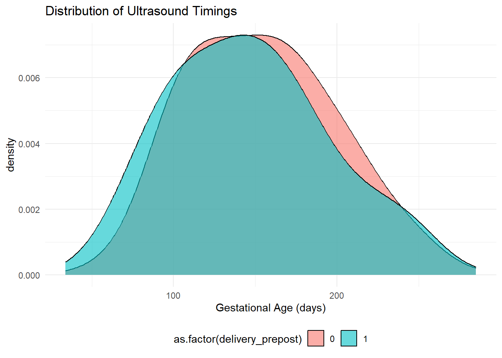

| Characteristic | Pre-Intervention n = 6971 |
Post-Intervention n = 5421 |
|---|---|---|
| Age (years) | 25 (21 - 31) | 26 (21 - 31) |
| High Risk Pregnancy | 115 (16%) | 98 (18%) |
| HIV+ | 263 (38%) | 194 (36%) |
| Primigravid | 238 (34%) | 176 (32%) |
| 1 Median (Q1 - Q3); n (%) | ||
Interrupted Time Series Analysis
Introduction
Before beginning the process of writing up the results and deciding what to focus on in the discussion, I thought it would be helpful to present a rough initial analysis and some visualisations to give some direction. While the stats themselves are basically finished (I think), the visuals still need work but that will be primarily aesthetic.
This analysis will focus on the timing of ultrasounds before and after the intervention at the end of November 2018. This analysis will be an ARIMA-model for the continuous data, and a Generalised Estimating Equation for the proportion of early scans. There is also some secondary analysis of time between booking and ultrasounds. I could also add an analysis of timing of booking if that would be deemed to be helpful/necessary.
The initial process (not included here) was data cleaning (in excel), creating the time series in R, and doing some preliminary analysis on the Pre-Intervention data to choose the correct model. This process showed a non-stationary mean, and a (0, 1, 1) ARIMA model as optimal. I have excluded this from this document for ease of use but can add it if necessary.
Baseline Characteristics
The two groups are similar across all the metrics. I haven’t included p-values in the table as I think visual inspection allows for the similarity to be noted, but can add them if needed.

ARIMA summary
For the ARIMA analysis, the data were aggregated by month into the mean days of gestation at each scan. While on visual inspection (fig 1) there appears to be both a step-change and a slope change at the time of the intervention, the pre-intervention data shows a wide range of ultrasound timings which results in large standard errors in the counterfactual prediction (fig 2). While the coefficients within the model are negative (towards earlier scans), they are not statistically significant.
Figure 1 (counterfactual)

Figure 2 (with error bars)

Model Summary Tables
| term | estimate | std.error | statistic | p.value |
|---|---|---|---|---|
| ma1 | -0.542 | 0.145 | -3.725 | 0.000 |
| time | 0.530 | 1.302 | 0.407 | 0.684 |
| intervention | -13.507 | 11.345 | -1.191 | 0.234 |
| time_since_int | -0.437 | 1.889 | -0.231 | 0.817 |
| term | estimate | std.error | statistic | p.value |
|---|---|---|---|---|
| ma1 | -0.505 | 0.164 | -3.078 | 0.002 |
| time | 0.569 | 1.321 | 0.430 | 0.667 |
| intervention | -14.062 | 11.084 | -1.269 | 0.205 |
| time_since_int | -0.216 | 1.914 | -0.113 | 0.910 |
| age | -1.701 | 1.226 | -1.388 | 0.165 |
| primi | 10.741 | 23.917 | 0.449 | 0.653 |
| hiv | 27.702 | 18.453 | 1.501 | 0.133 |
| highrisk | -9.733 | 23.140 | -0.421 | 0.674 |
Generalised Estimating Equation
For the analysis of the proportion of early scans in the pre and post intervention periods, a Generalised Estimating Equation was utilised. Unlike the continuous data, individuals without scans were included in the “late ultrasound” group whereas for the previous analysis they had been excluded. The tables for 2 models are below with and without covariates included in the model. The results are consistent with across both. The graph is the result without covariates and shows a much more easy to understand pattern than the more complex model. It is worth noting (and I am working out how to best present this) that the OR, etc are proportional changes so 1.03 is a 3% change per month in the proportion of early scans (eg 60 -> 63%).
| Characteristic | OR | 95% CI | p-value |
|---|---|---|---|
| Step Change at Intervention | 1.02 | 0.73, 1.41 | >0.9 |
| Slope Change Intervention | 1.05 | 1.02, 1.08 | 0.002 |
| Abbreviations: CI = Confidence Interval, OR = Odds Ratio | |||
| Characteristic | OR | 95% CI | p-value |
|---|---|---|---|
| Step Change at Intervention | 1.06 | 0.77, 1.47 | 0.7 |
| Slope Change Intervention | 1.03 | 1.00, 1.07 | 0.026 |
| age | 1.12 | 1.02, 1.24 | 0.021 |
| hiv | 0.37 | 0.09, 1.51 | 0.2 |
| high_risk | 0.97 | 0.06, 15.0 | >0.9 |
| primi | 1.83 | 0.16, 21.2 | 0.6 |
| Abbreviations: CI = Confidence Interval, OR = Odds Ratio | |||
Figure 3 (GEE Analysis)

Secondary Analysis
The secondary analysis will look at effects on booking to ultrasound times, and the overall timing of bookings using similar strategies to the primary analysis. Booking to ultrasound time is continuous data, but the mean was stationary. Thus, a segmented linear regression was chosen as the preferred method of analysis. This analysis showed a significant step change around the time of the intervention, but no significant slope change.
| Characteristic | Beta | 95% CI | p-value |
|---|---|---|---|
| month_index | 0.15 | -0.27, 0.57 | 0.5 |
| Step Change at Intervention | -7.8 | -16, 0.40 | 0.062 |
| Slope Change Intervention | -0.07 | -0.74, 0.60 | 0.8 |
| Abbreviation: CI = Confidence Interval | |||

The proposal included a pre-post analysis of the primary outcome but this would not be a statistically sound method of analysis. It is included below for completeness.
| Comparison of Pre/Post Gestational Age at first Ultrasound | |||||
|---|---|---|---|---|---|
| Statistic | DF | p_value | Mean_diff | CI_lower | CI_upper |
| 2.275 | 39.92 | 0.0284 | -8.62 | 0.961 | 16.279 |
Uptake of scans overall (GEE analysis)
| Characteristic | OR | 95% CI | p-value |
|---|---|---|---|
| Step Change at Intervention | 0.76 | 0.52, 1.12 | 0.2 |
| Slope Change Intervention | 1.14 | 1.08, 1.20 | <0.001 |
| Abbreviations: CI = Confidence Interval, OR = Odds Ratio | |||
| Characteristic | OR | 95% CI | p-value |
|---|---|---|---|
| Step Change at Intervention | 0.81 | 0.51, 1.30 | 0.4 |
| Slope Change Intervention | 1.13 | 1.06, 1.19 | <0.001 |
| age | 1.12 | 0.99, 1.27 | 0.064 |
| hiv | 0.17 | 0.02, 1.20 | 0.075 |
| high_risk | 1.36 | 0.13, 14.2 | 0.8 |
| primi | 6.09 | 0.29, 127 | 0.2 |
| Abbreviations: CI = Confidence Interval, OR = Odds Ratio | |||

Timing of booking
Similar to the ARIMA of the timing of scans, there is a trend towards earlier scans but the large standard errors mean that nothing reaches statistical significance when looking at the continuous variable “gestational age at booking”. The table below is the result of this ARIMA. I haven’t produced a graph.
| term | estimate | std.error | statistic | p.value |
|---|---|---|---|---|
| ar1 | -0.627 | 0.154 | -4.062 | 0.000 |
| ar2 | -0.261 | 0.162 | -1.609 | 0.108 |
| time | 0.396 | 1.519 | 0.261 | 0.794 |
| intervention | -5.874 | 11.344 | -0.518 | 0.605 |
| time_since_int | -0.523 | 2.225 | -0.235 | 0.814 |
The next process is to analyse this data when dichotomised into early / late. This uses the same GEE technique as in the timing of ultrasounds. This has a similar pattern to the other proportional tests, but with no significant change in the timing of bookings. Of note, older cohorts booked earlier than younger cohorts. Tables and graphs below.
| Characteristic | OR | 95% CI | p-value |
|---|---|---|---|
| month_index | 1.01 | 0.98, 1.05 | 0.5 |
| Step Change at Intervention | 0.97 | 0.61, 1.56 | >0.9 |
| Slope Change Intervention | 1.01 | 0.97, 1.06 | 0.6 |
| Abbreviations: CI = Confidence Interval, OR = Odds Ratio | |||
| Characteristic | OR | 95% CI | p-value |
|---|---|---|---|
| month_index | 1.00 | 0.97, 1.03 | 0.8 |
| Step Change at Intervention | 1.15 | 0.78, 1.69 | 0.5 |
| Slope Change Intervention | 1.00 | 0.96, 1.04 | >0.9 |
| age | 1.22 | 1.10, 1.34 | <0.001 |
| hiv | 0.43 | 0.12, 1.55 | 0.2 |
| high_risk | 0.85 | 0.10, 7.05 | 0.9 |
| primi | 1.71 | 0.24, 12.0 | 0.6 |
| Abbreviations: CI = Confidence Interval, OR = Odds Ratio | |||

Number of antenatal visits
There are a few ways to do this analysis. One is to look at the mean/median visits per cohort, or the data can be dichotomised at certain threshold (eg 4+ visits, less than 4) and those proportions compared, or it can analysed as ordinal data (# with 1 visit, # with 2 visits, etc). I have started with the dichotomised method as it matches the previous techniques.
| Characteristic | OR | 95% CI | p-value |
|---|---|---|---|
| Step Change at Intervention | 1.04 | 0.72, 1.50 | 0.9 |
| Slope Change Intervention | 1.07 | 1.04, 1.11 | <0.001 |
| Abbreviations: CI = Confidence Interval, OR = Odds Ratio | |||
| Characteristic | OR | 95% CI | p-value |
|---|---|---|---|
| Step Change at Intervention | 1.04 | 0.72, 1.52 | 0.8 |
| Slope Change Intervention | 1.07 | 1.03, 1.11 | <0.001 |
| age | 1.03 | 0.93, 1.14 | 0.5 |
| hiv | 0.66 | 0.17, 2.59 | 0.6 |
| high_risk | 1.93 | 0.19, 19.1 | 0.6 |
| primi | 1.59 | 0.19, 13.1 | 0.7 |
| Abbreviations: CI = Confidence Interval, OR = Odds Ratio | |||

My questions
Does this answer the primary question and meet the study objectives?
Question
Does offering routine basic antenatal ultrasound at a primary healthcare facility compared to a hospital-based service in the Mbhashe Subdistrict of the Eastern Cape increase the proportion of pregnant women who have antenatal ultrasounds in accordance with the South African NDOH guidelines?
Objectives
- Assess the effect of offering decentralised basic antenatal ultrasound at a primary healthcare clinic on the proportion of pregnant women who have scans between 18- and 20-weeks of gestation. (This feels outdated with the new guidelines. #2 seems more accurate)
- Assess the effect of offering decentralised basic antenatal ultrasound at a primary healthcare clinic on the proportion of pregnant women who have scans before 24-weeks of gestation.
- Assess the effect of offering decentralised basic antenatal ultrasound at a primary healthcare clinic on the proportion of pregnant women who have at least one antenatal scan.
- Assess the effect of offering decentralised basic antenatal ultrasound at a primary healthcare clinic on the timing of booking visits, and the total number of antenatal visits by pregnant women at that clinic. (Still need to run this one)
Is the analytical process able to be followed (even if the statistical processes are complex)?
While the visualisations need work, are the representations in a format that makes sense?
What other ways of visualising the data would be helpful?
What more do you want to know?